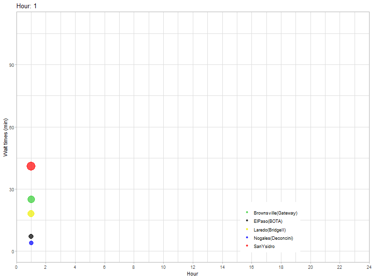

3 The San Diego-Tijuana connection.
Alternative chapter title: The California-Phoenix connection: A search for affordability in the south west.
The housing market for Mexican cities at the US border has been attracting the attention of public policy officials and community organizations with a growing interest with particular emphasis after the 2009 financial crisis. From the academic perspective, several investigations have documented case studies where demand for residential space by population coming from the US (Kim 2020), are shaping the real estate landscapes in the Mexican side.
A behavior that in turn, creates a local upward path for housing prices on border urban areas on the Mexican side such as Tijuana “Roberto Flores, HIR Interview” (2023), where local people facing higher housing prices are being priced-out of specific residential locations, including areas near the central business district (CBD) and the so called golden residential area, “Keller Williams Fabian Torres Sánchez Interview” (2023) as well as the areas in close proximity to border crossings which face an increased pressure to accommodate a growing housing demand that customers and real estate investors coming from the north, create.
Indeed, there is empirical evidence documented by expert scholars on the field, such as Soto-Rubui and Hausman, (Soto-Rubio and Hausman 2019), describing how the local real estate market in this border region, has experimented continuous pressures that has resulted in affordability challenges for residents in Mexican border cities such as Tijuana. In their remarkable research, Soto-Rubui and Hausman highlight how competition for residential space has intensified.
In this chapter the goal is to analyze the economic conditions that explain the movement of people from the US into Mexican border cities shading light on the effects over local real estate markets. The chapter considers the current housing market conditions at the biggest Mexican border city, Tijuana, Baja California.
3.1 Why Tijuana is important when studiying housing prices in California.
Tijuana, Baja California is located at the US Mexico border just across the city of San Diego. Given it´s privilege location, Tijuana has become the biggest population center in all of Mexico´s norther border and a strategic economic regional manufacture hub covering a wide range of industries, including electronics, automotive parts, medical devices, aerospace components, textiles, and consumer goods and services.
Notably, the historic influx of labor which has been robust since the 1970’s is underpinned by a dynamic internal migration11 influx of individuals seeking livelihoods within the manufacturing sector(Kopinak 2003; Gallegos 2009), traditionally a low wage sector of the labor force(Kopinak et al. 2020). Although this demographic trends were propelled by public policies dating back to 1965 with the emblematic Border Industrialization Program (BIP) and bi national regulations such as the North American Free trade Agreement, (NAFTA) which was signed in December 1992, and subsequent USMCA (signed in November 2018), currently the intense trans border movement of people is subject to additional economic determinants that include asymmetries on housing market conditions between both sides of the border. (Chávez 2016).
This city hosts the busiest pedestrian and personal Vehicle passenger port of entry to the US along the northern Mexican Border. According to official information provided by the Bureau of transportation statistics, during 2022, California ports of entry registered 16,104,055 pedestrian crossings and among these, the San Ysidro gate, situated right at Tijuana´s city heart, accounts for 6,678,157 pedestrian crossings, surpassing the traffic registered by second busiest port El Paso, by 82%. Figure 1 below provides evidence to compare border crossings by port of entry along the Us Mexico border.
Figure 1. US Mexico border North bound crossings by ports of entry. 2022: Pedestrians, Passenger vehicles, Trucks loaded and Bus passengers.
Source: José Luis Manzanares Rivera with data from Bureau of Transportation Statistics (BTS) Border Crossing Data (U.S Department of Transportation 2023)
Here…. Analyze results form plot. contrasts passeners behaviur vs. truck and commercial loads routes.
This intense people movement reflects the underlying social dynamics that this region generates(Rubin-Kurtzman, Ham-Chande, and Maurice D. Van Arsdol 1996) which is strongly influenced by specific economic determinants, one such key driving factor being bi-national labor market conditions and housing market prices differentials.
Figure 2. Wait times for Passenger Vehicles. Selected US-Mexico border ports of entry Septembrer 2022
 Source: José Luis Manzanares Rivera based on data from U.S. Customs and Border Protection.(U.S. Customs and Border Protection 2022) Historical Wait Times. Average values for Mondays, September 2022, General Lanes.
Historically, there has been several structural factors that contribute to housing shortages in the Mexican city of Tijuana.(Soto-Rubio and Hausman 2019), however recently, added pressures of binational economic nature, to enter the housing market have emerged, for the local population living in specific neighborhoods situated in close proximity to border crossings or residential areas that are particularly attractive to US commuters and remote workers coming from the southern California region, particularly from the San Diego-Chula Vista-Carlsbad metropolitan statistical area.
As a result, a surge in real estate development has occurred in the area known as Playas de Tijuana and Rosarito, where property prices have experienced rapid growth during the last decade. !!!!!!! ATTENTION NEEDED HERE: data is needed to reinforce the argument. How house prices growth in this particular area compares to other urban areas in the country and to the average growth in the whole country? INCLUDE DATA FOR MEXICNA REAL STATE PAGES SUCH AS INMUEBLES24 WITH COMPARATIVE TRENDS ANMONG THE MAIN CITIES